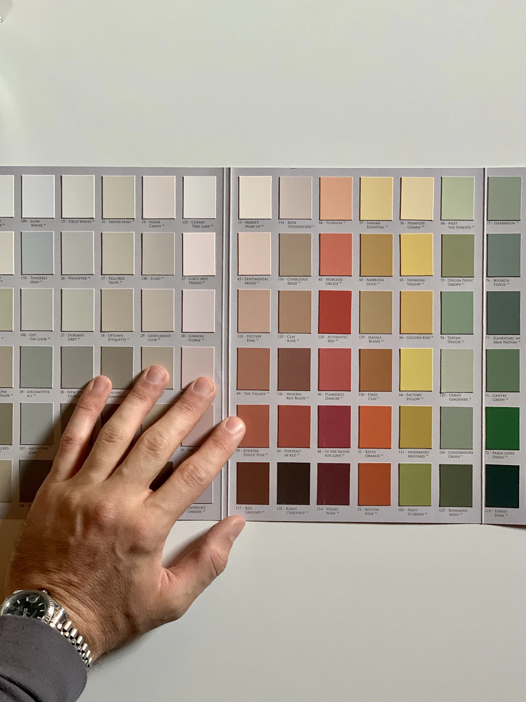
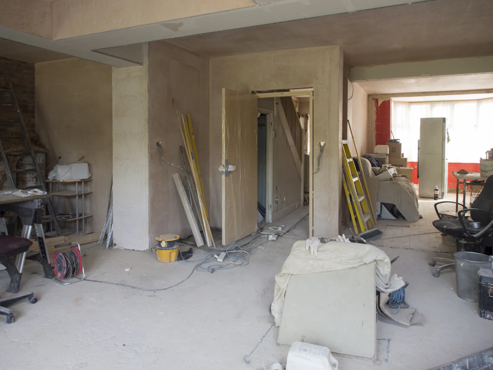

Peinture
PeinturePeinture intérieure
Murs, plafonds, boiseries et huisseries. Peinture mate, satinée ou laque selon la pièce, deux couches croisées minimum.
 Préparation
PréparationPréparation des supports
Protection du chantier, lessivage, grattage des parties qui cloquent, rebouchage des fissures et ponçage.
 Enduits
EnduitsEnduits et lissage
Reprise des murs abîmés, fissures et différences de relief, avec passes successives et ponçage entre les couches.

TeintesTeintes et finitions
Essais de teintes sur le mur, à la lumière de la pièce, et choix du degré de brillance : mat, velours ou satiné.
 Revêtements
RevêtementsMurs texturés et revêtements
Enduits décoratifs, toile de verre à peindre et papier peint : préparation du mur, pose et reprise des raccords.

RénovationRemise en état de pièces
Après un dégât, un déménagement ou avant une vente : murs, plafonds et moulures remis à neuf, étapes coordonnées.
Ce que précise un devis.
Un devis écrit décrit les travaux pièce par pièce, pour que vous sachiez exactement ce qui est prévu.
- Surfaces et pièces concernées, état des supports constaté
- Travaux de préparation prévus (enduit, ponçage, impression)
- Nombre de couches, références de peintures et finitions
- Protection du chantier et nettoyage de fin de travaux
- Calendrier d’intervention, à convenir avec vous
Parlons de votre chantier.
Décrivez les pièces, l’état des murs et le calendrier souhaité. Un devis détaillé précise les travaux, les produits et les finitions.